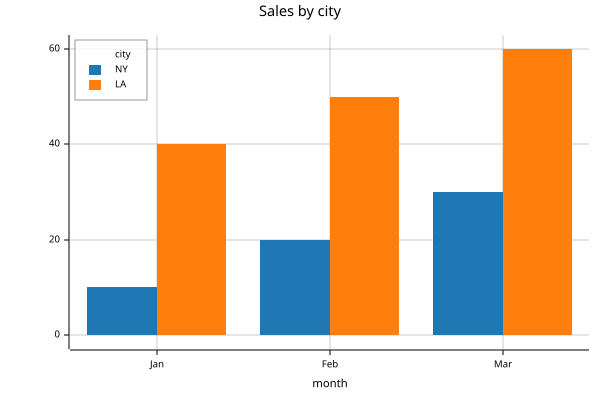
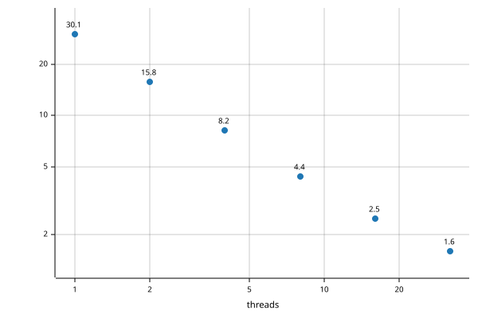

from basedpl import apl, fn, Array, plus, tally
import numpy as npPython
Native arrays, callable functions and Python conversions.
Native arrays
apl is the APL workspace. It keeps its names for the life of the Python process. Calling it returns a native basedpl.Array. Its immutable data retains nesting, exact numbers and empty-array prototypes. Use .np or .py to convert it.
v = apl('1 2 4')
v1 2 4Python operators use bAsedPL’s array semantics. Python determines precedence, so this multiplies before adding:
v * 2 + 13 5 9Indexing counts from 0, as in Python. Negative positions count from the end. A full : selects an axis. Iteration yields rows of a matrix rather than individual elements:
a = apl('2 3⍴⍳6')
a.shape, a[0, :], a[:, 1], a[:, -1], list(a)((2, 3), [0., 1., 2.], [1., 4.], [2., 5.], [[0., 1., 2.], [3., 4., 5.]])bAsedPL also exposes functions by their word names. plus.reduce is +/; adding .each applies it to each nested element:
nested = apl('[[1 2] [3 4 5]]')
nested[[1 2] [3 4 5]]In Python, chain the corresponding word functions:
plus.reduce.each(nested)3 12f = plus.reduce.each
f(nested)3 12Python integers become exact values. Functions compose too: plus.reduce / tally builds the mean function +/÷≢. Its result is still a native array, even when scalar:
exact = Array([1, 2, 4])
mean_native = plus.reduce / tally
mean_native(exact)7r3The native representation uses Python numeric notation: 2 is exact and 2. is approximate. .apl returns the APL display as a string:
v.apl, exact.apl('1 2 4', '1ₓ 2ₓ 4ₓ')The workspace
apl is shared by the whole Python process, including the notebook magics. apl(']clear') removes every name and restores the starting display settings.
Calling apl returns a native array or function and prints explicit APL output. It suppresses implicit APL display. Use .np or .py when you need a converted result:
apl('3 3⍴⍳9').nparray([[0., 1., 2.],
[3., 4., 5.],
[6., 7., 8.]])Module and apl attributes expose the builtins. Glyph names (add, dash, mul, div) accept either valence; operation names (plus, subtract, times, divide) curry a dyadic call. Thus add with one argument conjugates, while plus(2) binds the right argument:
apl.add(2+3j).py, apl.plus(2)(3).py, apl.times(2)([1, 2, 3]).py((2-3j), 5, array([2, 4, 6]))Keyword arguments bind Python values in the workspace. Square brackets read an APL expression or assign a value:
apl(x=np.arange(1, 6))
apl['v'] = [3,1,4,1,5]
apl['{⍵ ⍋⍵}v'].nparray([1, 1, 3, 4, 5])fn makes a composable Function from an APL function expression. It is the same as apl.fn. Pass one argument for a monadic call or two for a dyadic call. Python integers stay exact, so .py converts this mean to a Fraction rather than a float:
apl('mean←{⍝ Mean of a vector\n(+/⍵)÷≢⍵}')
mean = fn('mean')
mean([1,2,4]).pyFraction(7, 3)Names and help
Type mean? for its comment help and mean?? for APL source. The same information is available programmatically:
mean.source, apl.names('me')('{⍝ Mean of a vector\n(+/⍵)÷≢⍵}', ['mean'])See names and help for source lookup, erasure and inspection APIs.
fn is late-bound: fn("foo") follows later redefinitions of foo. Use apl("foo") to retain its current function.
Calls print only explicit output (⎕← and display commands). A second argument of 'explicit' captures it instead, returning a Result with the native .value and the captured .output:
r = apl('⎕←x ⋄ x+1x', 'explicit', x=3)
assert r.value.py == 4
assert r.output == ['3ₓ']'repl' also captures implicit expression display, as the APL prompt shows it. The %%apl cell magic uses it. In ordinary Python notebooks, append ; to suppress display of a call’s return value.
Labelled arrays
data = [[10, 20, 30], [40, 50, 60]]
keys = ('NY', 'LA'), ('Jan', 'Feb', 'Mar')
sales = Array(data, axis_keys=keys, axis_names=('city', 'month'))
sales.axis_names, sales.axis_keys(('city', 'month'), (('NY', 'LA'), ('Jan', 'Feb', 'Mar')))Arithmetic matches named axes and aligns their keys, rather than relying on order. This adjustment lists the months backwards but still adds 1 to January, 2 to February and 3 to March in each city. .df copies the result to pandas, preserving labels; install pandas to use it.
months = 'Mar', 'Feb', 'Jan'
adjustment = Array([3, 2, 1], axis_keys=(months,), axis_names=('month',))
(sales + adjustment).df| month | Jan | Feb | Mar |
|---|---|---|---|
| city | |||
| NY | 11 | 22 | 33 |
| LA | 41 | 52 | 63 |
Plots
plot draws a chart from an array, and the result displays as that chart. Keys label the x axis and the legend, and axis names title them. Keyword arguments give its settings, with dictionaries for nested ones:
legend = {'position': 'top-left'}
apl.plot(sales, mark='bar', title='Sales by city', legend=legend)
A dict of equal-length lists is a table. Its x column supplies the x values, and every other column is a series. Plots lists all the settings.
threads = [1, 2, 4, 8, 16, 32]
seconds = [30.1, 15.8, 8.2, 4.4, 2.5, 1.6]
apl.plot({'x': threads, 'seconds': seconds}, mark='point', labels=1,
x={'title': 'threads', 'scale': 'log'}, y={'scale': 'log'})
Values and conversion
Array retains atoms, shape, nesting, numeric domain and empty prototypes. .is_atom distinguishes an atom from a rank-zero array; both have .shape == (). .apl is APL display. .py converts atoms to Python values and character vectors to strings. Other arrays become NumPy arrays, including rank-zero arrays. .np always returns an ndarray.
For axis-keyed arrays, .py returns a dict at rank 1 and a pandas DataFrame at higher ranks. .np copies the values. Attach labels with Array(data, axis_keys=[rows, cols]); use None for an unkeyed axis. .axis_keys returns a tuple of label tuples or None.
axis_names names dimensions; axis_keys names positions within them. Matching axis names align before positional broadcasting. .axis_names returns one name or None per dimension.
from basedpl import Array, plusm = Array([[1, 2, 3], [4, 5, 6]], axis_names=('city', 'month'))
v = Array([10, 20, 30], axis_names=('month',))
assert (m + v).np.tolist() == [[11, 22, 33], [14, 25, 36]]
assert plus.reduce['month'](m).np.tolist() == [6, 15]
assert plus.reduce['month'](m).axis_names == ('city',).df converts any array to a DataFrame. The last axis supplies columns; earlier axes supply rows, using a MultiIndex above rank 2. Unkeyed axes are labelled from 0. Install pandas for this conversion. Pandas is imported on demand.
Axis names become pandas index/column names, including MultiIndex level names.
from fractions import Fraction
from basedpl import Arrayassert Array(2).apl == '2ₓ'
assert Array(2.).apl == '2'
assert Array(Fraction(1, 3)).py == Fraction(1, 3)| Python input | APL value |
|---|---|
int, bool, NumPy integers |
Exact number |
float |
Approximate real |
Fraction |
Exact rational |
complex |
Approximate complex |
str |
Character vector |
| Rectangular list/tuple | Ordinary array |
| Ragged list/tuple | Nested array |
| NumPy ndarray | Array preserving shape and numeric domain |
dict with string keys |
Keyed vector, recursively. .py returns a dict |
.np or np.asarray(a) always produces an ndarray. Simple numeric arrays use int64, float64 or complex128; fractions, large integers, nesting and mixed exact/approximate values use object. Character arrays use U1.
import numpy as npa = Array([[1, 2, 3], [4, 5, 6]])
np.testing.assert_array_equal(a.np, [[1, 2, 3], [4, 5, 6]])Python/NumPy conversions copy. Passing an Array back to bAsedPL shares its immutable value. Keep Array to preserve empty prototypes and exact nesting. NumPy is needed only for ndarray conversion.
Array operations
Arithmetic uses APL agreement, aligning leading axes. Indexing starts at 0, and negative positions count from the end. : selects a whole axis.
np.testing.assert_array_equal(a + [10, 20], [[11, 12, 13], [24, 25, 26]])
np.testing.assert_array_equal(a[1, :], [4, 5, 6])
np.testing.assert_array_equal(a[:, [0, 2]], [[1, 3], [4, 6]])
np.testing.assert_array_equal(a[:, -1], [3, 6])Comparisons return arrays. % uses Python’s operand order for residue; // floors division; @ is matrix product. &/| give LCM/GCD, hence AND/OR on Booleans. len and iteration use major cells. Use member(x, y) for membership. Bounded slices are not supported.
Callable functions
.fn() creates a callable APL function. One argument supplies ⍵; two supply ⍺, ⍵. Arguments pass directly as values.
mean = apl.fn('{(+/⍵)÷≢⍵}')
assert mean([1, 2, 4]).py == Fraction(7, 3)
assert mean([1., 2., 4.]).py == 7 / 3
add = apl.fn('+')
np.testing.assert_array_equal(add([1, 2, 3], 10), [11, 12, 13]).fn('g') follows later redefinitions of g; apl('g') retains its current function.
Module and apl attributes select builtin functions by glyph, glyph name, operation name or alias. Use underscores for hyphenated names and a trailing underscore for Python keywords. System functions also accept names without •.
assert apl.multiply(2, 3).py == 6
assert apl.index_of([4, 2, 7], [7, 4]).py.tolist() == [2, 0]
assert getattr(apl, '+')(2, 3).py == 5
assert apl.add(1+2j).py == 1-2j
assert apl.plus(2)(3).py == 5
assert apl.mul(-2).py == -1
assert apl.times(2)(3).py == 6
assert apl.normal([0., 1.])['cdf'](0.).py == 0.5Glyphs and glyph names are ambivalent: one argument supplies ⍵, two supply ⍺, ⍵. Operation names select valence and curry, as imported word functions do. The glyph names add, dash, mul, div distinguish them from the dyadic operations plus, subtract, times, divide. Operation names win any remaining overlaps.
import basedpl as b
from basedpl import add, πassert add(2).py == 2
assert b.divide(2)(3).py == Fraction(3, 2)
assert π(1).py == np.piKeyword arguments supply ⍺ as a keyed vector, and the positional arguments form ⍵. One positional argument supplies ⍵ directly, several form a vector, and none supplies ⍬. System functions take their options on the left, so options become keyword arguments. Element functions take attributes the same way:
circle = b.element('circle')
orange = circle(cx=30, cy=50, r=20, fill='orange')
blue = circle(cx=70, cy=50, r=20, fill='steelblue')
pic = b.svg(orange, blue, width=200)
picThe keyword arguments became attributes. System functions read keyword arguments as options:
b.xml(circle(r=10)), b.json('{"a": null}', fill=0)('<circle r="10"/>', {'a': 0})CSV options work the same way. nget and nput read and write files, as in b.nput(text, path='copy.csv'):
table = b.csv('price,qty\n10.5,2\n20.0,4\n')
text = b.tocsv(table, separator=';').py
b.csv(text, separator=';').py{'price': array([10.5, 20. ]), 'qty': array([2, 4])}r compiles a regex into keyed functions, which Python indexes by name:
p = b.r(r'([a-z]+)([0-9]+)')
p['replace']('$2:$1', 'ab12')12:abLegal Python identifiers such as π work directly; other glyphs use getattr(b, '+'). Existing Python attributes win; glyph/operation names precede unbulleted system names. Thus apl.binomial is !; use apl.fn('•binomial') for the distribution. Lookup uses exact registered names and aliases; unknown names raise AttributeError. dir() lists available builtins. Workspace variables remain accessible through apl['name'].
Function vectors, such as [+ × ÷], retain callable handles. first and pick return the selected function:
from basedpl import first, pickfs = apl('[+ × ÷]')
assert pick(1, fs)(2, 3).py == 6
assert first(fs)(2, 3).py == 5Array([f, g]) also constructs a function vector; .py and object-dtype .np export Python callables.
f.source returns APL source; f.inspect() returns source and help. apl.names(prefix, classes) lists visible bindings. apl.inspect(name) reads a name or glyph. IPython supports f?, f?? and name completion in apl strings. See names and help.
Word functions
Primitives also have Python names. Dyadic names bind the right argument when called with one argument; .left(x) binds the left.
from basedpl import plus, times, subtract, tallyassert times(2)(3).py == 6
assert subtract(2)(5).py == 3 # 5−2
assert subtract.left(2)(5).py == -3 # 2−5
mean = plus.reduce / tally
assert mean([1, 2, 4]).py == Fraction(7, 3)Names distinguish valences: sign/times, shape/reshape, iota/index_of, first/take, mix/pick. times(2.) binds an approximate number; times(2) an exact one. Operators use the underlying APL function.
exponential and exponent name the monadic and dyadic forms of *. power names the operator ⍣, exposed as f.power(n). System functions are available by name on the module or apl, such as apl.normal.
basedpl.symbols is the shared naming table used by Python functions and REPL and notebook completion. Each row is (glyph, name, monad, dyad, aliases, shortcut): the canonical glyph name, monadic and dyadic function names (empty when absent), and space-separated extra completion aliases. It includes operators and syntax glyphs too, with empty function names. Python replaces hyphens with underscores and appends an underscore to keywords (not → not_). shortcut is the REPL’s formatted Alt-key suffix, derived from keyboard.json: " h" for Alt-h, " Sa" for Alt-Shift-a, or "" when absent. The table is directly JSON-serializable for JavaScript consumers.
| Python | APL |
|---|---|
f.reduce, f.scan |
f/, f\ |
f.each, f.commute |
f¨, f⍨ |
f.outer, f.inner(g) |
f⌝, f.g |
f.key, f.stencil(s) |
f⌸, f⌺s |
f.rank(r), f.atop(g) |
f⍤r, f⍤g |
f.after(g), f.over(g), f.before(g) |
f⟜g, f⍥g, f⊸g |
f.power(n), f.at(i) |
f⍣n, f@i, with n a count, a list of counts, ∞ or a predicate |
f.history(n) |
f⍣(⍳1+n) for a count, f⍣[g;] for a predicate |
f.with_inverse(g), f.under(g) |
f⇄g, f⌾g |
f.derivative |
f∂ |
f[k] |
f⍠k, axes k |
Operator properties chain in APL order: subtract.commute.reduce is -⍨/. Operators needing another operand retain a hole until supplied:
twice = times(2)
assert twice.power.each(3)([1, 2]).py.tolist() == [8, 16] # (twice⍣3)¨f.power.each(n) constructs (f⍣n)¨, just like f.power(n).each. For multiple missing operands, successive calls fill the innermost construction first: f.power.each.power(n)(m) constructs ((f⍣n)¨)⍣m. Complete the operands before passing evaluation arguments.
Arithmetic between functions makes forks: f+g is (f+g). f @ g is inner product. f << g is the Atop f⍤g, and f >> g is g⍤f. f ** n is power. Python’s precedence applies when building these expressions.
Math families: prime/prime_mode (ℙ), factors/factor_spec (⨸), polynomial/polyval (⊛). windows is dyadic ↕.
Roots: sqrt/root (√). Complex coordinates: real_imag (∨), polar (∧), cis (○). pi_times/pi_ratio (π) give π multiples/fractions. Also square, double, decrement, increment, classify, binary_encode and binary_decode.
from basedpl import prime, factors, polyvalassert prime(9).py == 29
np.testing.assert_array_equal(factors(700), [2, 2, 5, 5, 7])
p = polyval.left([1, 2, 3])
assert p(2).py == 17
assert p.derivative(2).py == 14
np.testing.assert_array_equal(p.derivative([10, 20], [1, 2]), [80, 280])
np.testing.assert_array_equal(plus.left(1).history(3)(0), [0, 1, 2, 3])Printing functions
to_python(f) shows a function using Python word names and combinators.
from basedpl import to_python, plus, times, tallyassert to_python(plus.reduce / tally) == 'plus.reduce / tally'
assert to_python(times(2.)) == 'times(2.)'
assert to_python((plus.reduce / tally).each) == '(plus.reduce / tally).each'For an ambivalent function, dyad=True selects the dyadic spelling. Word functions already specify their valence.
assert to_python(apl('×')) == 'sign'
assert to_python(apl('×'), dyad=True) == 'times'
assert to_python(apl('2-')) == 'subtract.left(2.)'
assert to_python(apl('{⍵×2}¨')) == 'fn("{⍵×2}").each'Dfns and late-bound .fn(...) expressions retain their APL source. Use apl('+/÷≢') to evaluate a function expression and print its assembled structure. Printing itself never executes APL. Approximate 2 prints as 2., exact 2x as 2, and fractions as Fraction(...). Complex array constants retain APL notation inside apl(...).
The output is explanatory Python spelling. Python argument evaluation order and workspace definitions remain the caller’s responsibility.
Errors and interruption
AplError provides the diagnostic, kind, message, source, byte span, call context and prior output. Completed assignments survive errors. Capturing calls retain output on the exception; ordinary calls print it before raising.
Ctrl-C interrupts evaluation. From another thread, call apl.interrupt(). apl.timeout = 2 gives each evaluation a two-second deadline. None, the default, removes it.
Evaluation runs on the calling thread with the GIL released, so other Python threads keep running. The workspace remains usable after interruption. Native-library calls can delay cancellation. For a hard-kill fallback, use a process worker.